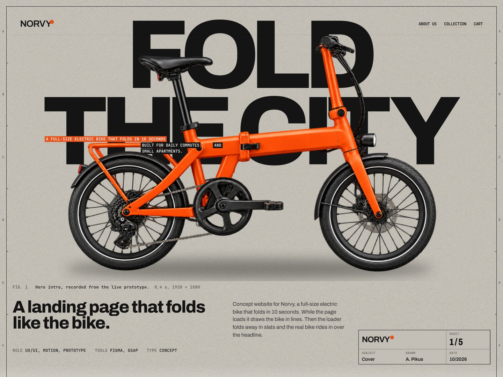
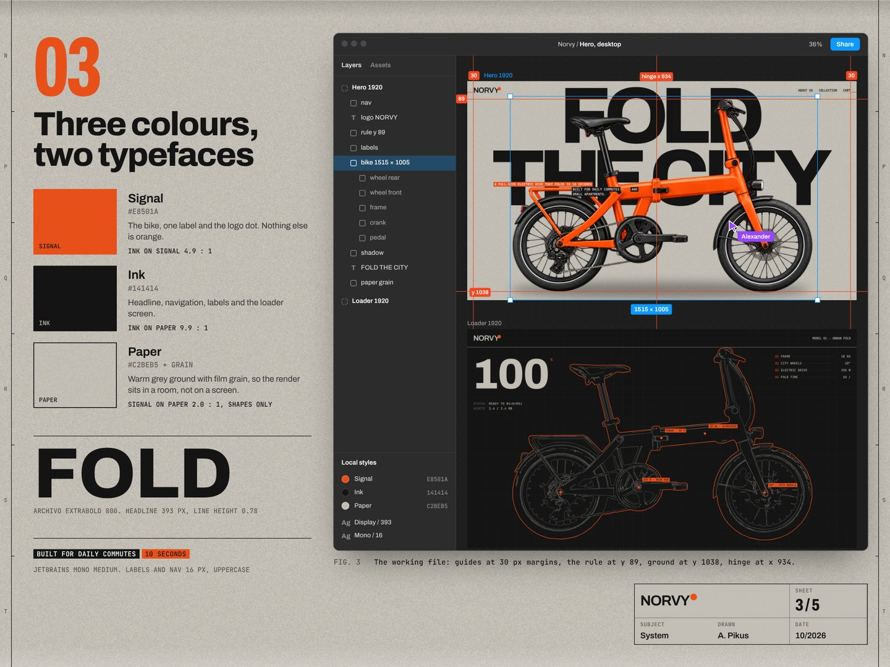
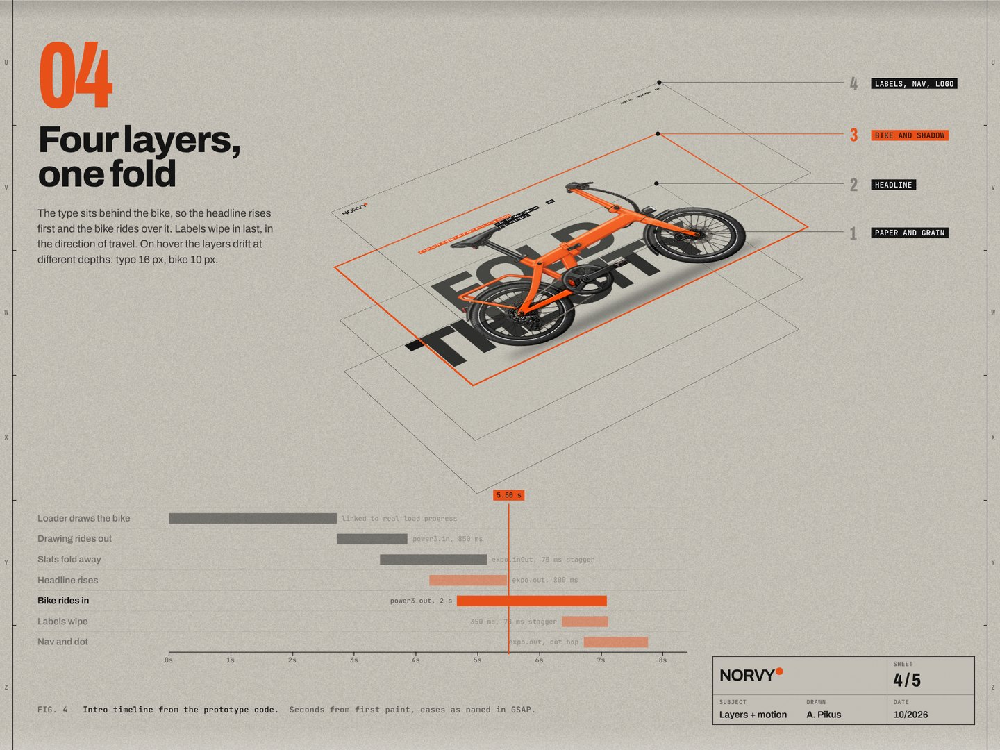
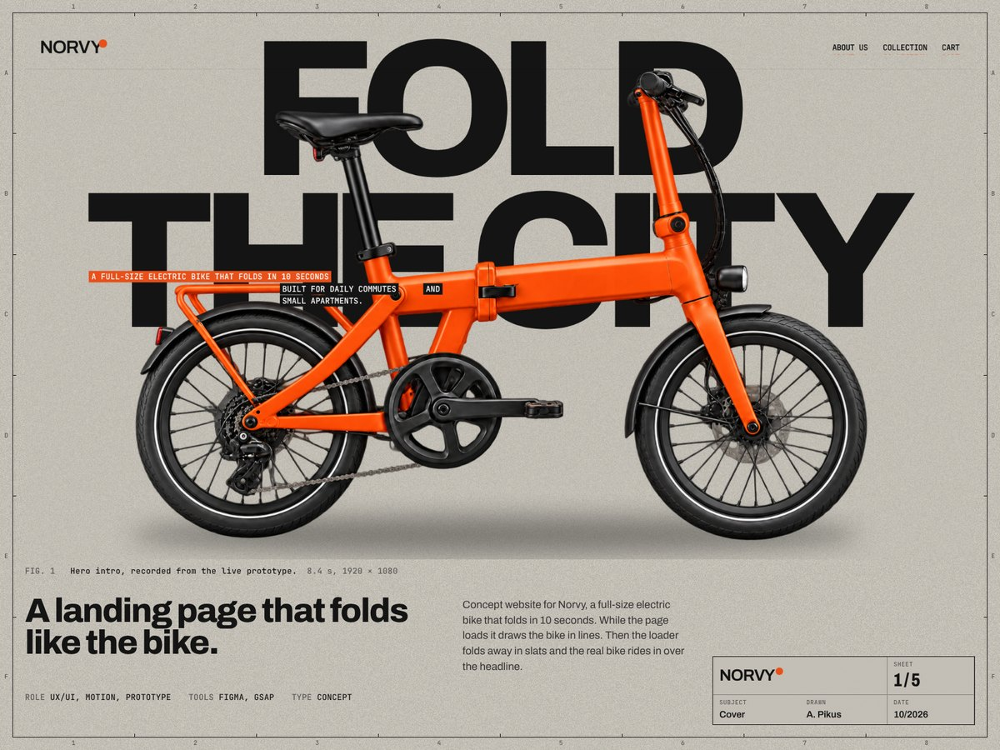
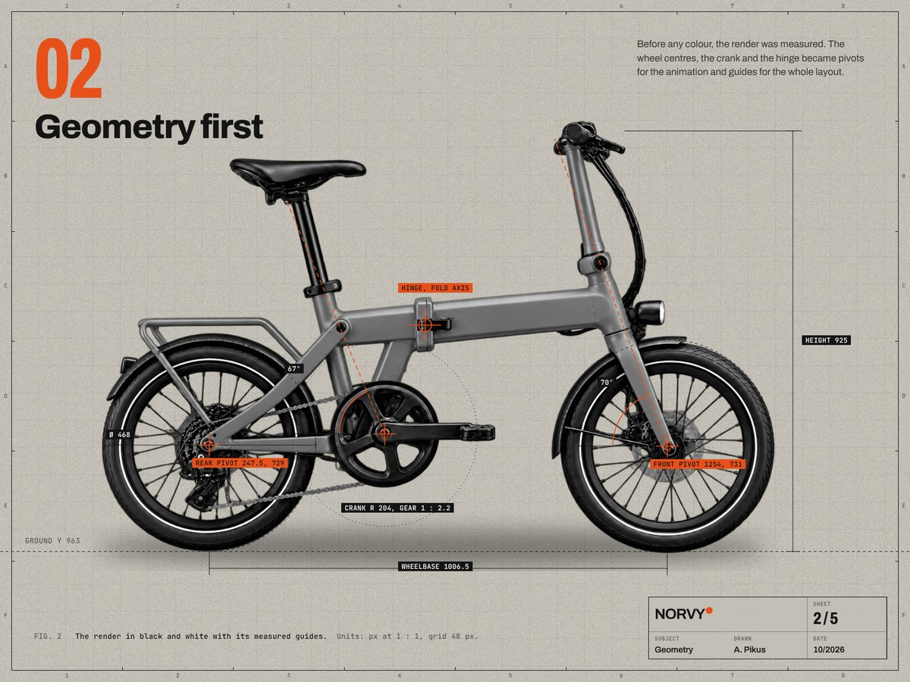
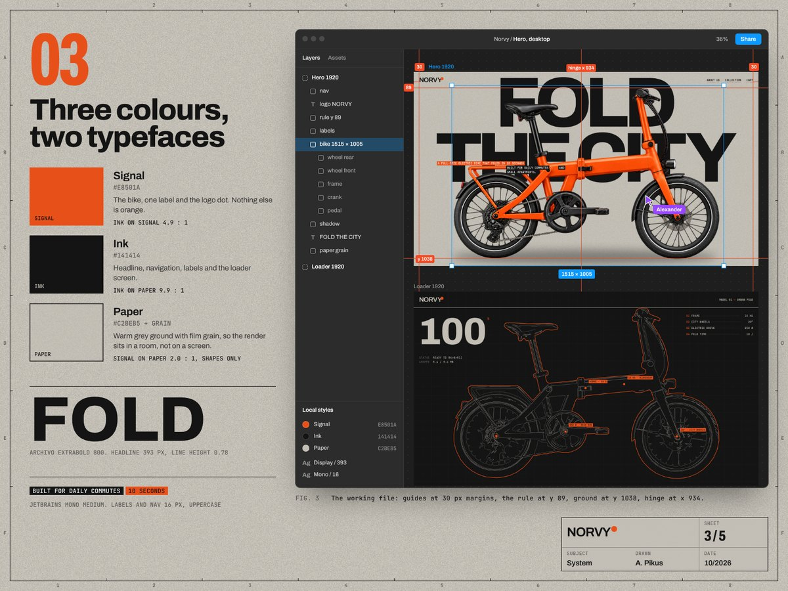
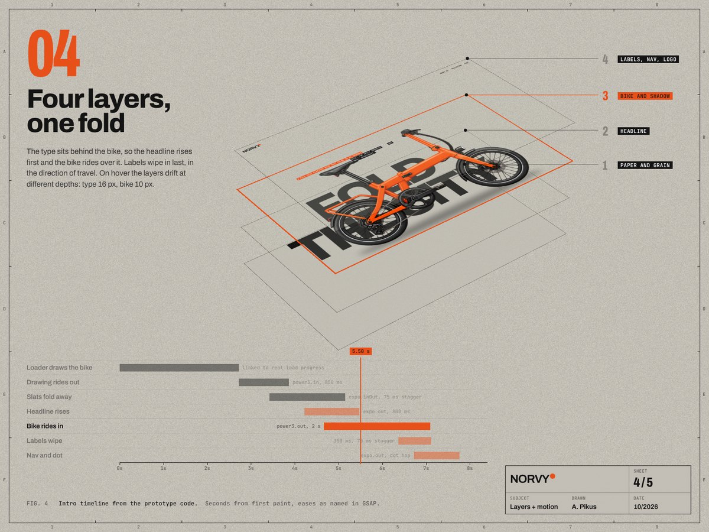
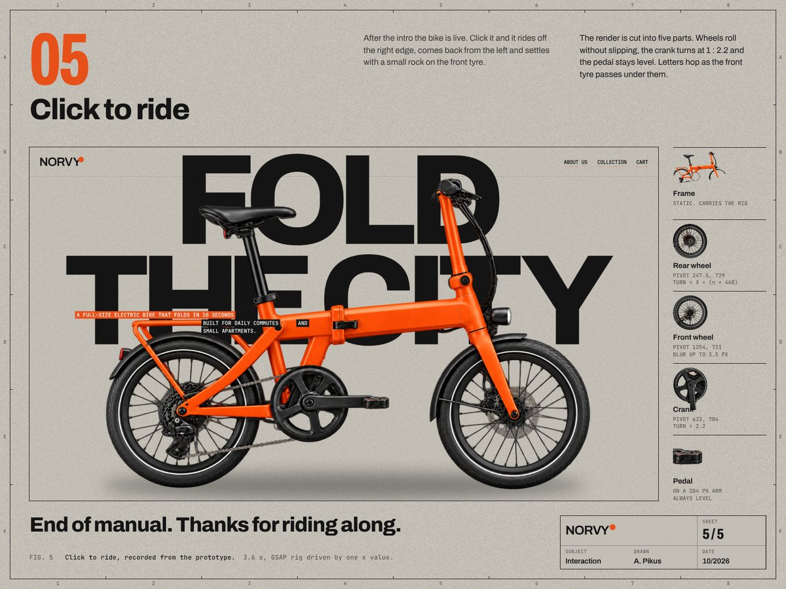

Case study for the Norvy folding e-bike site, drawn as a five-sheet technical manual. One set joins into a seamless Behance longread, the other works as five standalone Dribbble shots.







